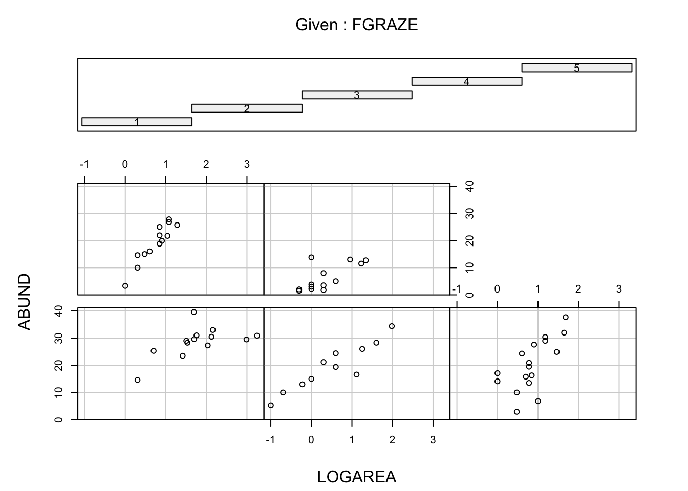
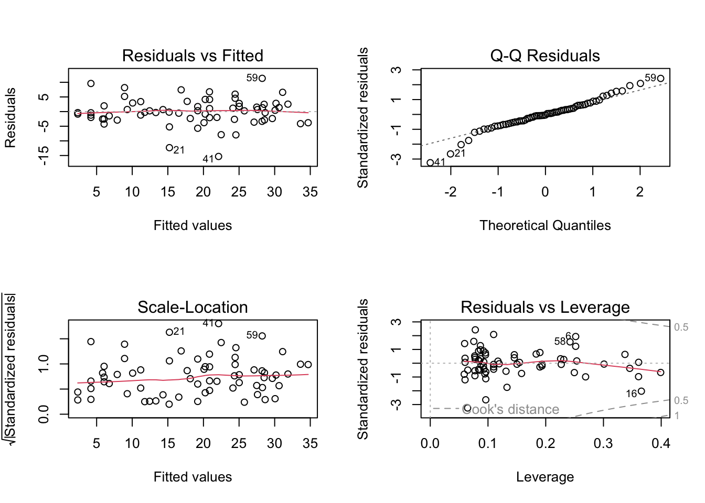
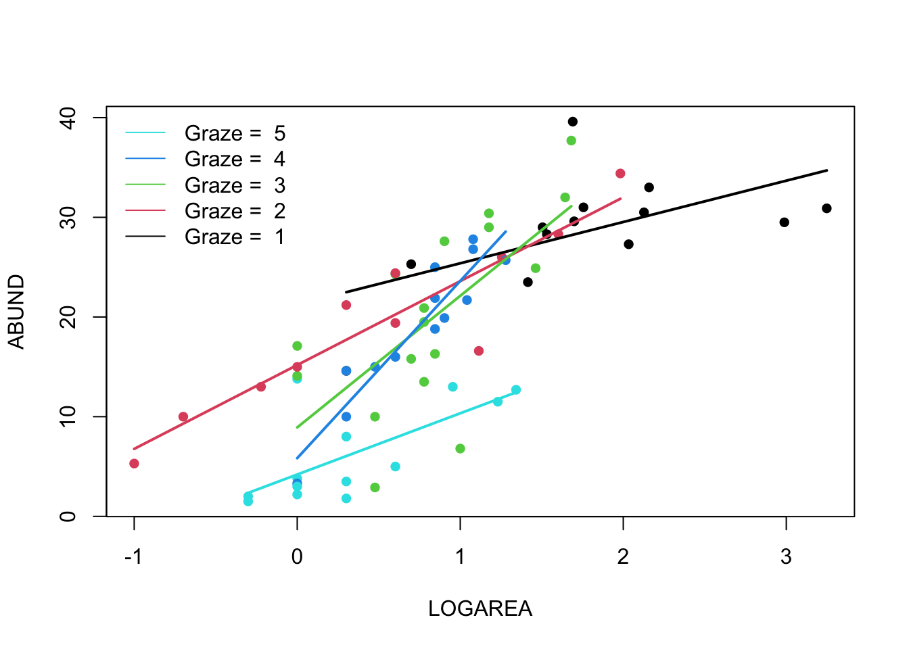
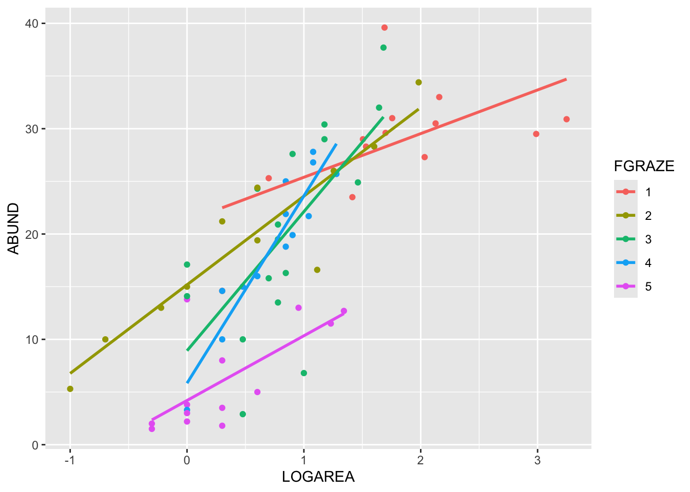

Exercises
Linear model with an interaction between a continuous and a categorical variable
This exercise builds on the previous exercises where you fitted a
linear model with either a single continuous explanatory variable or a
single categorical explanatory variable. In this exercise you will fit a
model with both a continuous and categorical explanatory variable and
allow their effects to interact (i.e. the effect of one explanatory
variable on the response variable changes with the value of the another
explanatory variable). This is the third of four complementary
exercises, based on the loyn data set.
1. As in previous exercises, either create a new R script (perhaps
call it ‘linear_model_3’) or continue with your previous R script in
your RStudio Project. Again, make sure you include any metadata you feel
is appropriate (title, description of task, date of creation etc) and
don’t forget to comment out your metadata with a # at the
beginning of the line.
2. Import the data file ‘loyn.txt’ into R and take a look at the
structure of this dataframe using the str() function. We
know that the abundance of birds ABUND increases with the
log10 transformed area of the forest patch
(LOGAREA variable). We also know that bird abundance
changes with the grazing intensity (FGRAZE variable) with
forest patches with higher grazing intensity having fewer birds on
average. But how do these effects combine together? Would a small patch
with low grazing intensity have more birds than a larger patch with high
grazing intensity? Could the fit of the ABUND ~ LOGAREA
model for the large patches be improved if we accounted for grazing
intensity in the patches?
loyn <- read.table("data/loyn.txt", header = TRUE,
stringsAsFactors = TRUE)
str(loyn)
## 'data.frame': 67 obs. of 8 variables:
## $ SITE : int 1 60 2 3 61 4 5 6 7 8 ...
## $ ABUND : num 5.3 10 2 1.5 13 17.1 13.8 14.1 3.8 2.2 ...
## $ AREA : num 0.1 0.2 0.5 0.5 0.6 1 1 1 1 1 ...
## $ DIST : int 39 142 234 104 191 66 246 234 467 284 ...
## $ LDIST : int 39 142 234 311 357 66 246 285 467 1829 ...
## $ YR.ISOL: int 1968 1961 1920 1900 1957 1966 1918 1965 1955 1920 ...
## $ GRAZE : int 2 2 5 5 2 3 5 3 5 5 ...
## $ ALT : int 160 180 60 140 185 160 140 130 90 60 ...
3. As previously we want to treat AREA as a
log10-transformed area to limit the influence of the couple
of disproportionately large forest patches, and GRAZE as a
categorical variable with five levels. So the first thing we need to do
is create the corresponding variables in the loyn
dataframe, called LOGAREA and FGRAZE.
loyn$LOGAREA <- log10(loyn$AREA)
# create factor GRAZE as it was originally coded as an integer
loyn$FGRAZE <- factor(loyn$GRAZE)
4. Explore the relationship between bird abundance and log
transformed forest patch area for each level of grazing. You could
manually create a separate plot for each graze level but it’s more
efficient to use a conditional scatterplot (aka coplot, see section
4.2.6 of the R book or the help page for the function
coplot()). A coplot lets you visualise the relationship
between ABUND and LOGAREA for each level of
FGRAZE, with FGRAZE levels increasing from the
bottom-left panel (Graze level 1) to the top-right panel (Graze level
5). What patterns do you see? Is it okay to assume that the relationship
between ABUND and LOGAREA is the same for all
grazing levels or does the relationship change? This is effectively
asking if the slopes of the relationship between ABUND and
LOGAREA are different for each FGRAZE level -
this is called an interaction.

# or
# library(lattice)
# xyplot(ABUND ~ LOGAREA | FGRAZE, data = loyn)
# - Within a grazing level, abundance seems to increase with the log patch area
# in a more or less linear fashion
# - Overall, the mean abundance seems to decrease as grazing levels increase.
# This is most noticeable in the highest grazing level.
# - Some of the slopes of the relationships (imagine a straight line) appear to be
# somewhat different for the different graze levels. The slopes for graze levels
# 1 and 2 are similar, but different for graze levels 3, 4, and 5. We will
# need to test this with a model.
5. Fit an appropriate linear model in R to explain the variation in
the response variable ABUND with the explanatory variables
LOGAREA and FGRAZE. Also include the
interaction between LOGAREA and FGRAZE. Hint:
: is the interaction symbol! Remember to use the
data = argument. Assign this linear model to an
appropriately named object, like birds_inter1. Optional:
Can you remember how to specify the model using the ‘shortcut’ version
(with *) instead?
birds_inter1 <- lm(ABUND ~ FGRAZE + LOGAREA + FGRAZE:LOGAREA, data = loyn)
# Or use the 'shortcut' - it's equivalent to the model above
# birds.inter.1 <- lm(ABUND ~ FGRAZE * LOGAREA, data = loyn)
6. As conscientious researchers, let’s first check the assumptions of
our linear model by creating plots of the residuals. Remember, that you
can split your plotting device into 2 rows and 2 columns using the
par() function before you create the plots. Check each of
the assumptions using these plots and report whether your model meets
these assumptions.
# first split the plotting device into 2 rows and 2 columns
par(mfrow = c(2,2))
# now create the residuals plots
plot(birds_inter1)
# To test the normality of residuals assumption we use the Normal Q-Q plot.
# The central residuals are not too far from the Q-Q line but the extremes
# are too extreme (the tails of the distribution are too long). Some
# observations, both high and low, are poorly explained by the model.
# The plot of the residuals against the fitted values suggests these
# extreme residuals happen for intermediate fitted values.
# Looking at the homogeneity of variance assumption (Residuals vs
# Fitted and Scale-Location plot),
# the graphs are mostly messy, with no clear pattern emerging.
# The observations with the highest leverage don't appear to be overly
# influential, according to the Cook's distances in the Residuals vs
# Leverage plot (all < 0.5).
7. Use the anova() function to produce the ANOVA table
of your linear model. Remember, this ANOVA table is based on sequential
sums of squares (the order of the explanatory variables matters). The
only P value that we should interpret is the one that occurs in the
second to last row of the table (the one above ‘Residuals’). This is the
interaction term between FGRAZE and LOGAREA
(FGRAZE:LOGAREA). What is the null hypothesis associated
with this interaction term?
Do we reject or fail to reject this hypothesis?
What is the biological interpretation of this interaction term? Can
we say anything about the hypotheses for the main effects of
FGRAZE or LOGAREA?
anova(birds_inter1)
## Analysis of Variance Table
##
## Response: ABUND
## Df Sum Sq Mean Sq F value Pr(>F)
## FGRAZE 4 3324.2 831.06 34.9018 1.005e-14 ***
## LOGAREA 1 1692.0 1692.04 71.0600 1.335e-11 ***
## FGRAZE:LOGAREA 4 389.3 97.33 4.0874 0.00556 **
## Residuals 57 1357.3 23.81
## ---
## Signif. codes: 0 '***' 0.001 '**' 0.01 '*' 0.05 '.' 0.1 ' ' 1
# The null hypothesis is that there is no significant interaction between
# FGRAZE and LOGAREA.
# As the P value is smaller than our cutoff of 0.05 (p = 0.005) we reject the
# null hypothesis and conclude that there is a significant interaction.
# This means that there is a significant relationship between bird abundance
# and log area, and that this relationship is different for different levels of
# graze (at least one of them is different). Put another way, the slopes of the
# relationship between abundance and log area for each level of graze are different.
# As there is a significant interaction, it's difficult to interpret the main
# effects of FGRAZE and LOGAREA as by definition the effect of one variable is
# dependent on the value of the other variable.
8. OK, now for the part you all know and love! Use the
summary() function on your model object to produce the
table of parameter estimates. Using this output, take each line in turn
and answer the following questions:
- what does this parameter estimate?
- What is the biological interpretation of the corresponding estimate?
- What is the null hypothesis associated with it?
- Do you reject or fail to reject this hypothesis?
Also compare the multiple R2 from this model the models you created in the previous two exercises.
Please ask one of the course instructors to take you through this if you’re confused :).
summary(birds_inter1)
##
## Call:
## lm(formula = ABUND ~ FGRAZE + LOGAREA + FGRAZE:LOGAREA, data = loyn)
##
## Residuals:
## Min 1Q Median 3Q Max
## -15.3238 -2.4528 -0.1822 2.5097 11.3529
##
## Coefficients:
## Estimate Std. Error t value Pr(>|t|)
## (Intercept) 21.243 3.433 6.187 7.09e-08 ***
## FGRAZE2 -6.061 3.825 -1.584 0.11863
## FGRAZE3 -12.321 4.217 -2.921 0.00499 **
## FGRAZE4 -15.407 4.614 -3.339 0.00149 **
## FGRAZE5 -17.043 3.795 -4.491 3.51e-05 ***
## LOGAREA 4.144 1.772 2.339 0.02287 *
## FGRAZE2:LOGAREA 4.270 2.413 1.770 0.08211 .
## FGRAZE3:LOGAREA 9.058 3.079 2.942 0.00471 **
## FGRAZE4:LOGAREA 13.634 4.149 3.286 0.00174 **
## FGRAZE5:LOGAREA 1.996 3.143 0.635 0.52803
## ---
## Signif. codes: 0 '***' 0.001 '**' 0.01 '*' 0.05 '.' 0.1 ' ' 1
##
## Residual standard error: 4.88 on 57 degrees of freedom
## Multiple R-squared: 0.7993, Adjusted R-squared: 0.7676
## F-statistic: 25.22 on 9 and 57 DF, p-value: < 2.2e-16
# (Intercept)
# Here the Intercept (baseline) is the predicted ABUND when LOGAREA = 0,
# for FGRAZE level 1.
# the null hypothesis for the intercept is that the intercept = 0
# As the P value < 0.05 (7.09e-08) we reject this null hypothesis.
# LOGAREA
# Represents the slope of the relationship between ABUND and LOGAREA,
# specific to FGRAZE = 1.
# The null hypothesis is that the slope of the relationship
# between LOGAREA and ABUND = 0, for level FGRAZE = 1 only.
# So, for graze 1 the slope is 4.14. This means, that for a 1 unit increase in LOGAREA
# we get a corresponding increase of 4.4 birds on average.
# As the P value (0.022) is < 0.05 we conclude that the slope is
# significantly different than 0.
# FGRAZE2
# Is the estimated difference (contrasts) between the *intercept* of FGRAZE level
# 2 and the reference level intercept, FGRAZE = 1.
# The null hypothesis associated with this estimate is that the difference
# in the intercepts between graze level 1 and graze level 2 = 0.
# As the P value (0.118) is > 0.05 we fail to reject this null hypothesis and
# conclude that the intercepts for graze level 1 and graze level 2 are the same.
# FGRAZE3, FGRAZE4, FGRAZE5
# The parameter estimates have the same interpretation as for FGRAZE2 (above).
# They are all estimates of the difference between FGRAZE at the appropriate level
# and FGRAZE 1 (Intercept).
# FGRAZE2:LOGAREA
# This represents the difference in the slope of the relationship between ABUND
# and LOGAREA between graze level 2 and graze level 1.
# The null hypothesis is that the difference in slopes between graze level 1
# and 2 = 0 (i.e. no difference).
# As the P value (0.082) > 0.05 we conclude that the slopes are not different
# (i.e. they are the same).
# FGRAZE3:LOGAREA
# This represents the difference in the slope of the relationship between ABUND
# and LOGAREA between graze level 3 and graze level 1.
# The null hypothesis is that the difference in slopes between graze level 1
# and 3 = 0 (i.e. no difference).
# As the P value (0.004) < 0.05 we conclude that the slopes are different (and
# therefore the relationship is different).
# FGRAZE4:LOGAREA, # FGRAZE5:LOGAREA
# These parameter estimates and null hypotheses are interpreted in the same way
# as for FGRAZE4:LOGAREA and FGRAZE5:LOGAREA
# The Multiple R-square value is 0.79, so 79% of the variation in the data is
# explained by the model. This is quite a bit more than the models with only
# LOGAREA and FGRAZE as single explanatory variables.
9. Right, now hang onto your hat! Let’s plot the predictions from
your model to figure out how it really fits the data (and help us
understand the output from the summary() function :).
Here’s a general recipe, using the predict() function.
plot the raw data, using a different colour for points from each
FGRAZElevelfor each
FGRAZElevel in turn:- create a sequence of
LOGAREAfrom the minimum value to the maximum within the grazing level (unless you wish to predict outside the range of observed values, probably best not too!). - store it in a data frame (i.e.
dat4pred) containing the variablesFGRAZEandLOGAREA.Remember thatFGRAZEis a factor, so its value need to be placed in quotes (i.e.FGRAZE = "1"). - Create a vector of predicted bird abundances using our new dataframe
(
dat4pred) using thepredict()function. - Add the predicted values to the plot using the
lines()function with the appropriate colour (same points colour for eachFGRAZElevel above).
- create a sequence of
See the solutions for one of many ways of doing this. Now this might seem like a huge amount of code just to plot your predicted values (and admittedly it is!) but most of the code is just repeated for each level of graze. Just work through it slowly and logically and hopefully it will make sense (please ask if you are confused). I will also show you some alternative (easier?) ways to do this in the solutions.
par(mfrow= c(1, 1))
plot(ABUND ~ LOGAREA, data = loyn, col = GRAZE, pch = 16)
# Note: # colour 1 means black in R
# colour 2 means red in R
# colour 3 means green in R
# colour 4 means blue in R
# colour 5 means cyan in R
# FGRAZE1
# create a sequence of increasing LOGAREA within the observed range
LOGAREA.seq <- seq(from = min(loyn$LOGAREA[loyn$FGRAZE == 1]),
to = max(loyn$LOGAREA[loyn$FGRAZE == 1]),
length = 20)
# create data frame for prediction
dat4pred <- data.frame(FGRAZE = "1", LOGAREA = LOGAREA.seq)
# predict for new data
P1 <- predict(birds_inter1, newdata = dat4pred)
# add the predictions to the plot of the data
lines(dat4pred$LOGAREA, P1, col = 1, lwd = 2)
# FGRAZE2
LOGAREA.seq <- seq(from = min(loyn$LOGAREA[loyn$FGRAZE == 2]),
to = max(loyn$LOGAREA[loyn$FGRAZE == 2]),
length = 20)
dat4pred <- data.frame(FGRAZE = "2", LOGAREA = LOGAREA.seq)
P2 <- predict(birds_inter1, newdata = dat4pred)
lines(dat4pred$LOGAREA, P2, col = 2, lwd = 2)
# FGRAZE3
LOGAREA.seq <- seq(from = min(loyn$LOGAREA[loyn$FGRAZE == 3]),
to = max(loyn$LOGAREA[loyn$FGRAZE == 3]),
length = 20)
dat4pred <- data.frame(FGRAZE = "3", LOGAREA = LOGAREA.seq)
P3 <- predict(birds_inter1, newdata = dat4pred)
lines(dat4pred$LOGAREA, P3, col = 3, lwd = 2)
# FGRAZE4
LOGAREA.seq <- seq(from = min(loyn$LOGAREA[loyn$FGRAZE == 4]),
to = max(loyn$LOGAREA[loyn$FGRAZE == 4]),
length = 20)
dat4pred <- data.frame(FGRAZE = "4", LOGAREA = LOGAREA.seq)
P4 <- predict(birds_inter1, newdata = dat4pred)
lines(dat4pred$LOGAREA, P4, col = 4, lwd = 2)
# FGRAZE5
LOGAREA.seq <- seq(from = min(loyn$LOGAREA[loyn$FGRAZE == 5]),
to = max(loyn$LOGAREA[loyn$FGRAZE == 5]),
length = 20)
dat4pred <- data.frame(FGRAZE = "5", LOGAREA = LOGAREA.seq)
P5 <- predict(birds_inter1, newdata = dat4pred)
lines(dat4pred$LOGAREA, P5, col = 5, lwd = 2)
legend("topleft",
legend = paste("Graze = ", 5:1),
col = c(5:1), bty = "n",
lty = c(1, 1, 1),
lwd = c(1, 1, 1))
(Optional, for the geeks) Alternative method given
in the solutions using afor loop. Just keep this code in
case you ever want to do something like this in the future.
# Okay, that was a long-winded way of doing this.
# If, like me, you prefer more compact code and less risks of errors,
# you can use a loop, to save repeating the sequence 5 times:
par(mfrow = c(1, 1))
plot(ABUND ~ LOGAREA, data = loyn, col = GRAZE, pch = 16)
for(g in levels(loyn$FGRAZE)){ # g will take the values "1", "2",..., "5" in turn
LOGAREA.seq <- seq(from = min(loyn$LOGAREA[loyn$FGRAZE == g]),
to = max(loyn$LOGAREA[loyn$FGRAZE == g]),
length = 20)
dat4pred <- data.frame(FGRAZE = g, LOGAREA = LOGAREA.seq)
predicted <- predict(birds_inter1, newdata = dat4pred)
lines(dat4pred$LOGAREA, predicted, col = as.numeric(g), lwd = 2)
}
legend("topleft",
legend = paste("Graze = ", 5:1),
col = c(5:1), bty= "n",
lty = c(1, 1, 1),
lwd = c(1, 1, 1))
(Optional, for the lazy!) And, if you want an even
easier way, then we can use the ggolot2 package (code in
the solutions). Note: you will need to install the ggplot2
package first if you don’t already have it.
# install.packages('ggplot2', dep = TRUE)
library(ggplot2)
ggplot(loyn, aes(x = LOGAREA, y = ABUND, colour = FGRAZE) ) +
geom_point() +
geom_smooth(method = "lm", se = FALSE)
End of the Linear model with continuous and categorical explanatory variables exercise